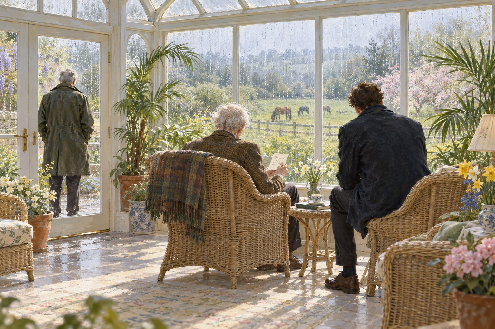

Консультант

Глава первая. Табличка
Один человек из тысячи, говорит Соломон,
будет держаться к тебе ближе брата.— Редьярд Киплинг, «Тысячный» (1910)
В Хитроу мы прилетели в понедельник, в третьем часу дня. Воскресенье, которое нам вернули над Тихим океаном, кончилось где-то над Гренландией, и я его не заметил. Было серо, мокро и холодно, как бывает в Англии в конце февраля, когда зима уже ушла, а весна ещё не решила, приходить ли. Я посмотрел в иллюминатор на мокрый бетон, на людей в жёлтых куртках под дождём и подумал, что дома.
Паспортный контроль, багаж, зелёный коридор. Таможенник не спросил про мёд. Здесь про мёд никто не спрашивает. Лора катила тележку, я шёл рядом и чувствовал, как с каждым шагом на мне становится тяжелее пальто, которое полгода пролежало в чемодане и пахло нафталином и чужим шкафом.
Хатауэй стоял у выхода, у самого ограждения, выше всех встречающих на полголовы. В руках у него была табличка. Белый картон, чёрные буквы: «Инспектор Льюис». Картон был новый, ровный, без пятна в углу. Я так и думал. Старая лежала у меня в чемодане, за Хаусманом.
Я подошёл. Он посмотрел на меня сверху вниз и сказал, что я загорел, и что он меня всё-таки узнал, хоть и не сразу. Я сказал, что он сделал новую табличку. Он сказал, что старую у него украли. Я сказал, что знаю, кто украл. Он сказал, что тоже знает, и что заявлять не стал, потому что вор пожилой и с хорошими рекомендациями. Лора смеялась, обнимая его. Он позволил себя обнять и держал при этом табличку на отлёте, чтобы не помять.
В машине Лора сразу заснула на заднем сиденье, как засыпают после двадцати восьми часов в воздухе: сидя, с открытым ртом, с сумкой на коленях. Я сидел впереди. Хатауэй вёл, как всегда, аккуратно и чуть быстрее, чем надо. Дворники ходили по стеклу. Мимо тянулись серые поля, голые изгороди, мокрые овцы. После Новой Зеландии всё казалось меньше и ниже, как в комнате, где ты жил в детстве.
Я ждал, что он скажет про дело. Он не говорил. Говорил про Муди, про то, что Мэддокс теперь держит в руках половину его бумаг и он не знает, где какая, про то, что в участке поменяли кофейный автомат и стало хуже. Я спросил про отца. Он помолчал, потом сказал, что отец в доме престарелых под Абингдоном, с осени. Что стало хуже, но не сильно. Что отец его иногда узнаёт, а иногда принимает за доктора. И что с доктором он, по крайней мере, вежливее.
Я спросил: дело, о котором он писал, — про отца? Хатауэй сказал, что не сегодня. Что мне надо выспаться, распаковаться и посмотреть, что американский профессор сделал с моим домом, если он опять там жил. Я сказал, что профессор уехал два года назад и что в доме полгода никто не жил, кроме зонта в прихожей. Он сказал: тем более. И добавил, что позвонит в выходные. Что это не горит. Что горело оно двадцать пять лет и ещё неделю потерпит.
Двадцать пять лет. Я посмотрел на него. Он смотрел на дорогу. Я понял, что больше он ничего не скажет, и не стал спрашивать. Хатауэй, когда решил молчать, молчит лучше всех, кого я знаю, кроме одного человека, которого уже шестнадцать лет нет.
Дом встретил меня запахом пыли и холодного камина. Лин приезжала раз в месяц, проверяла трубы и поливала цветок на подоконнике, который за полгода не умер, а, наоборот, выпустил два новых листа, как будто ему без меня стало легче. Зонт Вэл стоял в прихожей, где я его оставил. Я поставил чемодан рядом с ним. Сказал вслух, что я вернулся. Кому я это сказал, зонту или дому, я и сам не понял.
Лора поехала к себе: у неё своя квартира, и мы договорились, что первую ночь каждый проведёт дома, разберёт чемоданы и выспится, как человек, без чужого храпа. Это её слова. Я сказал, что не храплю. Она сказала, что на высоте десяти тысяч метров над Тихим океаном я храпел так, что стюардесса приходила проверить, всё ли в порядке с двигателем. Я не поверил. Потом подумал и поверил.
Хаусмана я вынул из чемодана первым. Поставил на полку, на его место. Табличку, старую, мятую, с жёлтым пятном, прислонил сзади к полке, за книгами. Потом долго стоял у окна. На улице горели фонари, шёл мелкий дождь, по мостовой проехал велосипедист в светящемся жилете. Всё было как полгода назад. Только где-то на другом конце света, под Нельсоном, на заднем дворе у Кэллума гудели ульи Сэнди, и девочке по имени Мэй был месяц.
Таблетку я в тот вечер выпил вовремя. Лора позвонила в десять и спросила, выпил ли. Я сказал, что выпил. Она сказала, что верит, потому что слышит по голосу. Я спросил, что она слышит. Она сказала, что слышит человека, которому завтра на работу, а работы ещё нет, и который поэтому найдёт себе работу сам. Я сказал, что контракт начинается первого апреля. Она сказала: «Вот именно», и пожелала мне спокойной ночи.
Глава вторая. Дом престарелых
Так уж устроена память: ничего она не приносит нам целиком. Она своенравное дитя, и все игрушки у неё сломаны.
— Джером К. Джером, «О памяти» (1886)
Хатауэй позвонил в субботу утром и спросил, свободен ли я. Я сказал, что свободен до первого апреля и что это меня пугает. Он сказал, что заедет в одиннадцать. Что поедем к отцу. Что он хочет, чтобы я его увидел, прежде чем он мне что-нибудь расскажет, потому что если сначала расскажет, я буду смотреть на отца по-другому.
Дом престарелых стоял за Абингдоном, среди полей, в бывшем помещичьем доме из красного кирпича с пристройками из стекла и белого пластика. Перед домом был газон, на газоне скамейки, на скамейках таблички. Я прочитал две, пока Хатауэй ставил машину. «В память о Джойс, которая любила этот сад». Я подумал, что в Новой Зеландии Лора бы сейчас засмеялась.
Внутри пахло, как пахнет во всех таких местах: чистящим средством, вареной капустой и чем-то сладким, что я так и не научился называть. Женщина за стойкой узнала Хатауэя, улыбнулась ему так, как улыбаются родственникам, которые ходят часто, и сказала, что отец сегодня хороший, позавтракал и сидит в зимнем саду.
Зимний сад оказался стеклянной пристройкой с плетёными креслами и горшками с какими-то пальмами. В креслах сидели старики, кто с газетой, кто просто так. Отец Хатауэя сидел у окна, спиной к нам, и смотрел на поле, где под мелким дождём паслись лошади.
Я его раньше никогда не видел: за все годы Хатауэй говорил об отце раза три, и всякий раз коротко. Высокий, сухой, с такой же длинной шеей, как у сына. Теперь он стал ещё суше. Твидовый пиджак был ему велик в плечах, как будто кто-то вынул из пиджака половину человека. Волосы белые, аккуратно причёсанные. Руки лежали на подлокотниках, длинные, в коричневых пятнах.
Хатауэй подошёл, наклонился и сказал: «Папа». Старик повернул голову. Посмотрел на сына внимательно, вежливо, как смотрят на человека, которого должны бы знать, но не могут вспомнить, кто это. Сказал: «Доброе утро, доктор». Хатауэй не стал поправлять. Сказал, что привёл гостя. Старик посмотрел на меня.
И тут что-то в его лице переменилось. Я видел такое у свидетелей, когда показываешь им фотографию. Он узнал не меня. Он узнал что-то во мне. Может быть, плащ. Может быть, то, как я стоял: руки в карманах, чуть наклонив голову, как стоят полицейские, когда входят в чужой дом и ещё не знают, разуваться или нет.
Он сказал: «Вы из полиции».
Я сказал, что был. Он не услышал, или не захотел услышать. Сказал, что ждал. Что знал, что придут. Что он всё сказал тогда. И потом, глядя мне прямо в глаза, голосом вдруг ясным и твёрдым, каким, наверное, говорил когда-то с работниками в поле: «Я подписал».
Я спросил, что он подписал. Он не ответил. Глаза у него опять стали вежливыми и пустыми. Он посмотрел в окно, на лошадей, и спросил, не пора ли обедать. Хатауэй сказал, что ещё рано. Старик кивнул. Потом спросил Хатауэя, как его зовут. Хатауэй сказал: «Джеймс». Старик сказал, что у него тоже есть сын Джеймс, учится в Кембридже, умный мальчик, очень умный, только пишет редко.
Хатауэй сказал, что, наверное, занят. Голос у него не дрогнул. Я на него не смотрел.
Мы просидели с ним полчаса. Он рассказывал про лошадей за окном: что вот та, гнедая, хромает на левую заднюю, а конюх не видит, а он бы на месте хозяина такого конюха выгнал. Говорил толково, со знанием, как человек, который всю жизнь смотрел за чужими лошадьми, чужими полями и чужими людьми. Потом устал, замолчал и задремал в кресле, свесив голову на грудь.
Пока он спал, медсестра, молодая, рыжая, с ирландским выговором, сказала Хатауэю, что ночью отец опять вставал и искал какие-то бумаги. Что ходил по коридору в пижаме и спрашивал у дежурной, где его папка. Что его уговорили лечь, а утром он ничего не помнил. Хатауэй сказал, что папка у него. Медсестра сказала, что, может быть, привезти её, ему будет спокойнее. Хатауэй сказал, что подумает.
На обратном пути мы молчали до самого Оксфорда. Дождь перестал. Над полями низко висели облака, и между ними иногда проглядывало бледное солнце, и тогда мокрые поля начинали блестеть.
У моего дома Хатауэй заглушил мотор и сказал, что теперь я видел. Что «я подписал» отец говорит с осени, с тех пор как его перевезли. Иногда раз в неделю, иногда три раза в день. Врачи говорят, что так бывает: из всей жизни в голове остаётся одна фраза, и человек повторяет её, потому что за неё держится, как за перила. Обычно это что-нибудь простое. «Я выключил газ». «Где моя мама». А у отца — «я подписал». И каждый раз полицейскому. Или тому, кого он принимает за полицейского.
Я спросил, что за папка. Он сказал, что покажет завтра. Что папку он нашёл, когда разбирал отцовский дом осенью. Что она лежала в ящике стола, под старыми счетами, перевязанная бечёвкой, и что он открыл её, прочитал и закрыл, и с тех пор не знает, что с ней делать. Что мне надо посмотреть самому.
Потом он сказал: «Там ваша подпись, сэр».
Он давно не называл меня «сэр». С тех пор, как сам стал инспектором. Я понял, что он сделал это нарочно, чтобы я понял, что разговор будет не между друзьями.
Глава третья. Папка
Сквозь разбитые окна мы смотрим на скользящие тени умерших, и печальнее всех — тени нас самих, тех, что в нас умерли.
— Джером К. Джером, «О памяти» (1886)
Хатауэй живёт в квартире, где всё стоит на своих местах и ничего лишнего, как в келье у монаха, который любит хорошие гитары. Гитара стояла в углу, на подставке. На столе лежала папка. Обычная картонная папка для бумаг, серая, выцветшая на сгибах, перевязанная бечёвкой, которую он, видимо, развязал, а потом завязал опять, тем же узлом.
Он налил мне чаю, себе не налил. Развязал бечёвку. Отошёл к окну и встал там, спиной ко мне, как стоят, когда не хотят видеть, как другой человек читает про твою семью.
В папке было немного. Сверху вырезка из местной газеты, пожелтевшая, с датой, которую кто-то вывел шариковой ручкой на полях: двадцать шестое ноября девяносто первого года. Заметка в полколонки. На охоте в Холлингтон-парке погиб загонщик, Даррен Кроу, двадцати трёх лет, из соседней деревни. Несчастный случай во время загона на фазанов. Полиция ведёт расследование. Ниже, другой ручкой, приписка: «Дознание 9.01.92». И второй вырезкой, приклеенной к той же бумажке: коронер вынес заключение о смерти в результате несчастного случая. Погибший, по показаниям свидетелей, покинул линию загонщиков и оказался перед стрелками в момент выстрела.
Под вырезками лежали показания. Копия на тонкой бумаге, какие тогда делали на ксероксах, с серым налётом по краям. Шапка полиции долины Темзы. Показания свидетеля. В графе «Фамилия, имя» стояла фамилия Хатауэй и имя, которого Хатауэй при мне ни разу не произносил: отца он всегда называл просто отцом. Должность: управляющий имением Холлингтон-парк. Дата: двадцать третье ноября тысяча девятьсот девяносто первого года. Две страницы машинописи. Ровный, толковый текст, каким говорят люди, привыкшие к отчётам. В десять утра собрались стрелки, восемь человек. Он, как управляющий, отвечал за порядок: расставлял по номерам, объяснял правила. Третий загон, Длинный лес, начался около полудня. Мистер Джайлс Пенроуз, сын владельца, стоял на номере три, в левом конце линии. Загонщик Кроу находился в правом конце, у номера семь или восемь. Выстрела, попавшего в Кроу, свидетель не видел. Кроу, по его мнению, отстал от линии загонщиков и вышел на открытое место перед стрелками.
Внизу подпись отца. А ниже, под строчкой «Показания принял», другая подпись. Мелкая, наклонная вперёд, с длинным хвостом у «с». Детектив-сержант Р. Льюис.
Я смотрел на свою подпись долго. Это был мой почерк, тот, который у меня был в девяносто первом, до того, как рука начала дрожать по утрам. Я помню, как выглядела моя подпись тогда. Я не помнил, как ставил её здесь.
Хатауэй спросил, не оборачиваясь, помню ли я.
Я сказал правду: нет. Девяносто первый год. Я был сержантом у Морса пятый год. Дел было много. Морс брал убийства, а несчастные случаи с ружьями на охоте шли по другому разряду, их обычно вёл кто-нибудь из участка, и Морса туда звали, только если что-то не сходилось. Если меня туда послали, значит, послал Морс. Значит, что-то не сходилось. Я этого не помнил.
Дальше в папке лежала карточка. Маленькая, плотная, размером с игральную карту, слегка загнутая по углам. На ней от руки, чернилами, столбиком восемь фамилий, а против каждой — цифры, по нескольку в ряд, через чёрточку. Сверху написано: «Холлингтон, 23 ноября». Почерк тот же, что подпись на показаниях. Я не сразу понял, что это. Потом понял: карточка с номерами стрелков. Такие раздают перед охотой, чтобы каждый знал, где ему стоять.
И последним в папке было письмо. Вернее, конверт, плотный, кремовый, от поверенного, с адресом конторы в Оксфорде. В конверте ничего не было. Только на обороте, карандашом, рукой отца, две буквы: «Д. Х.».
Я закрыл папку. Хатауэй обернулся.
Он сказал, что нашёл её осенью, когда разбирал отцовский дом перед продажей. Что отец с девяносто четвёртого года жил один, в маленьком доме в Уитни, и что в доме было три шкафа бумаг: счета, квитанции, гарантийные талоны на холодильники, которых давно нет. Отец был аккуратный человек и ничего не выбрасывал. А эта папка лежала отдельно, в ящике стола, под ключом, и ключ висел на одной связке с ключом от входной двери, так что он его носил с собой каждый день двадцать четыре года.
Хатауэй сказал, что знал про ту охоту. Что ему было тогда лет шестнадцать и он учился в школе-интернате, и что отец позвонил ему через неделю и сказал, что на охоте был несчастный случай, погиб парень из деревни, и что Джеймсу не надо беспокоиться. Что он и не беспокоился. Что он тогда вообще мало думал о том, что делает отец. А на Рождество приехал домой, и отец был другой. Не злой, не пьющий. Просто будто отошёл на шаг и с тех пор не подходил. Хатауэй сказал, что всю жизнь думал, что дело в нём самом. В том, что он поступил в Кембридж, что собирался в священники, что отец этого не понимал. А теперь не знает, что думать.
Я спросил, что за «Д. Х.» на конверте. Он сказал: «Джеймс Хатауэй». Это его инициалы. Других «Д. Х.» в жизни отца он не знает.
Я спросил, почему он не поднял дело сам. Он посмотрел на меня так, как смотрят на человека, задающего вопрос, ответ на который знают оба. Потом всё-таки ответил: потому что это его отец, и любой адвокат порвёт любое дело, которое ведёт сын свидетеля, на мелкие клочки. Потому что Муди, если узнает, отправит его в отпуск, а дело в архив, и будет прав. Потому что фамилия Пенроуз в графстве кое-что значит: мистер Джайлс Пенроуз теперь хозяин Холлингтона, заместитель лорда-наместника графства и председатель попечительского совета детской больницы, и его фотографию раз в месяц печатают в газете рядом с чеком. И потому, что подпись под показаниями не его, а моя.
Я сказал, что это нечестный довод. Он сказал, что знает. Что поэтому и приберёг его на конец.
Я сказал, что подумаю. Он сказал, что другого и не ждал. Перевязал папку бечёвкой, тем же узлом, и отдал мне. Сказал, что ему будет легче, если она пока полежит у меня.
Глава четвёртая. Первое апреля
…чьё единственное стремление, похоже, — платить налоги и делать то, что ему велят те, кого Провидению угодно было поставить над ним.
— Джером К. Джером, «Трое на четырёх колёсах» (1900)
Папка пролежала у меня на кухонном столе месяц. Я её не открывал. Я ходил мимо неё, ставил на неё чашку, однажды положил сверху газету и потом полдня искал газету. Лора видела папку, когда приходила ужинать, и ничего не спрашивала. Один раз только сказала, что у меня на столе лежит что-то, на что я смотрю, как Сэнди смотрел на свою медогонку до того, как я её починил.
Я думал. Думать мне никто не мешал: до первого апреля у меня не было никакой работы, кроме дома, сада и Лоры. Дом я привёл в порядок за неделю. Сад в марте приводить в порядок бессмысленно. Лора работала, у неё после полугода отпуска на столе лежало столько дел, что она приходила вечером серая и молчаливая и засыпала на диване под новости.
Думал я вот что. Если я начну это дело, я начну его как частное лицо. Консультант на контракте не имеет права вести расследования по собственному желанию. Если об этом узнает Муди, контракта не будет. Если об этом узнает Пенроуз, у Пенроуза найдётся адвокат, а у адвоката найдётся, что сказать Муди. И самое главное: если я начну, я, может быть, узнаю про себя то, чего знать не хочу. Что в девяносто первом году я, детектив-сержант, принял у свидетеля ложные показания, подписал их и не заметил. Или заметил и промолчал.
А если я не начну, отец Хатауэя будет повторять «я подписал» каждому, кого примет за полицейского, пока не умрёт. И Хатауэй будет навещать его по субботам и слушать.
В пятницу, первого апреля, я пришёл в участок к девяти. В девять ноль одна мне в коридоре сказали, что Муди ждёт. В девять ноль пять я сидел у него в кабинете, напротив пальмы.
Пальма была настоящая, в кадке, высокая, до потолка, и, судя по виду, жила тут лучше всех. Муди сидел за столом в белой рубашке без пиджака. Он из тех начальников, которые снимают пиджак, чтобы показать, что работают, и никогда не ослабляют галстук, чтобы показать, что работают не слишком. Он поздравил меня с возвращением. Спросил про Новую Зеландию. Выслушал два предложения про Новую Зеландию и сказал, что рад, что я отдохнул.
Потом он сказал, как всё будет. Он говорил ровно, как зачитывают условия договора, и, наверное, это и были условия договора. Консультант работает по поручению. Поручения даёт он, Муди, или старший следователь по делу с его ведома. Консультант не ведёт допросов без сотрудника, не подписывает процессуальных документов, не имеет доступа к текущим делам, кроме тех, по которым его привлекли. В свободное от поручений время консультант занимается тем, что ему поручено на это время. А на это время ему поручено вот что.
И он положил передо мной список. Восемнадцать старых нераскрытых дел, от семьдесят восьмого года до двухтысячного. Отдел пересмотра не справляется, сказал Муди. Людей мало, дел много. Мне поручается просмотреть эти восемнадцать и написать по каждому заключение: есть ли смысл трогать его снова, с новыми методами, или нет. Доступ в архив мне дадут.
Я смотрел на список и думал, что Муди, сам того не зная, только что выдал мне то, чего у меня не было: ключ от архива. Холлингтона в списке не было. Холлингтон и не мог там быть: дело не нераскрытое, дело закрытое, коронер вынес заключение. Но архив один на всех.
Муди, видимо, принял моё молчание за обиду. Сказал, что понимает, что это не та работа, которой я ждал. Что если появится живое дело, где понадобится мой опыт, он меня привлечёт. Что старые дела — тоже опыт. Я сказал, что старые дела — это как раз то, что надо. Он посмотрел на меня с подозрением, как смотрят на человека, который слишком легко согласился. Я сделал лицо пенсионера, которому всё равно. Лора говорит, что это лицо у меня не получается. Муди, кажется, поверил.
Мэддокс я встретил в коридоре. Она обрадовалась, спросила про загар, сказала, что Хатауэй полгода был невыносим, а последний месяц стал ещё невыносимее, и она не знает почему, но, может быть, я знаю. Я сказал, что не знаю. Она посмотрела на меня так, как смотрит хороший сержант на начальника, который врёт, и ничего не сказала. Хорошие сержанты ничего не говорят. Я это знаю, я сам четырнадцать лет был хорошим сержантом.
Кабинет мне дали в конце коридора, бывшую кладовую с окном во двор. Стол, стул, компьютер, который включался четыре минуты. Я сел за стол, положил перед собой список Муди и посмотрел в окно. Во дворе стояли машины. Шёл дождь. Был первый день апреля, и я подумал, что в нашей семье в этот день всегда кого-нибудь разыгрывали, и Вэл всегда разыгрывала меня, и я всегда попадался.
В обед я позвонил Хатауэю и сказал, что берусь. Он помолчал и сказал: «Спасибо». Больше ничего. Я сказал, что пока не за что. Он сказал, что знает.
Глава пятая. Архив
Я помню — впрочем, я помню очень давние вещи.
— Джером К. Джером, «О несомненных достоинствах того, что мы собирались сделать» (1898)
Архив у нас в подвале управления в Кидлингтоне. Длинные ряды железных стеллажей, коробки с номерами, лампы под потолком, которые включаются секциями, когда идёшь по проходу, и выключаются за спиной. Заведует архивом гражданский служащий по фамилии Паттл, человек лет под шестьдесят, в кардигане, с голосом библиотекаря и памятью, которой позавидовал бы любой компьютер. Он встретил меня как старого знакомого. Сказал, что помнит, как я в девяносто восьмом приходил за делом про утопленницу в Порт-Медоу и унёс его, не расписавшись. Я этого не помнил. Паттл сказал, что знает: никто не помнит, поэтому он и заведует архивом.
Восемнадцать дел из списка Муди он выдал мне за полчаса. Я сел за стол в читальной комнатке, за стеклянной перегородкой, разложил первые три коробки и честно работал до обеда. Мужчина, найденный в канаве у Бенсона в семьдесят восьмом. Пожар на складе в восемьдесят третьем. Исчезновение студентки в девяносто шестом. Хорошие дела, грустные, каждое заслуживало, чтобы кто-нибудь посмотрел на него ещё раз. Я писал заключения. Я хотел, чтобы Муди потом не мог сказать, что я сачковал.
После обеда я попросил у Паттла ещё одно дело. Назвал год, место, фамилию. Паттл посмотрел на меня поверх очков. Сказал, что этого дела в списке нет. Я сказал, что знаю. Что это моё дело, я по нему когда-то принимал показания, и что мне нужно сверить одну вещь для другого дела, из списка. Это было почти правдой: в восемнадцати делах был и несчастный случай с ружьём, восемьдесят первого года, и сверить там можно было что угодно.
Паттл подумал. Потом сказал, что архив для того и существует, чтобы в нём сверяли. И что расписаться я в этот раз всё-таки должен. Я расписался.
Дело Холлингтона оказалось тонким. Картонная обложка, на ней номер, фамилия погибшего, дата и штамп «Закрыто. Заключение коронера». Внутри лист вызова: двадцать третье ноября девяносто первого года, звонок в двенадцать сорок, сообщение о ранении на охоте. Рапорт первого констебля, приехавшего на место: тело на опушке, огнестрельное ранение в шею и голову, мелкая дробь, смерть до приезда скорой. Восемь показаний стрелков, одно в одно, как под копирку: никто не видел, кто выстрелил, все стреляли по птицам над лесом, Кроу оказался перед линией неожиданно. Показания отца Хатауэя, те самые, с моей подписью. Показания двух загонщиков: что Кроу шёл в правом конце, у края леса. И список стрелков с номерами, напечатанный на машинке: восемь фамилий, против каждой одна цифра. Пенроуз — три.
Протокол вскрытия: смерть от дробового ранения, расстояние выстрела, по оценке, от двадцати до тридцати метров. Справка от инспектора по охране труда: охота проводилась без нарушений, сигналы оговорены, загонщики проинструктированы, нарушений правил безопасности со стороны организаторов не установлено.
И на обратной стороне обложки, внизу, карандашом, почерком, который я узнал бы в любой темноте: «Не закончено. М.».
Я сидел и смотрел на эти три слова. Морс никогда не писал на обложках. Он считал, что обложки — для канцелярии, а мысли надо держать в голове, где их никто не прочитает. За тринадцать лет я видел его пометки на делах раза три. И все три раза это было что-то, что он потом не мог себе простить.
Я перелистал дело ещё раз, медленнее. За справкой инспектора по охране труда, прижатый скрепкой к картону так, что его было не видно, если не отогнуть, лежал листок из блокнота. Обычный листок в линейку, сложенный пополам. Я развернул его.
Почерк был мой. Мелкий, наклонный, торопливый, как я пишу, когда записываю на ходу, стоя. «М. — Загонщик Норрис (старший) говорит: стреляли низко, с седьмого номера. Говорил мне у машины, без свидетелей, официально давать не хочет — работает в имении. Допросить ещё раз? Р. Л. 25.11».
А ниже, другим почерком, тем же, что на обложке, одно слово, обведённое: «Да».
Я этого не помнил. Я не помнил загонщика Норриса, не помнил разговора у машины, не помнил, как писал эту записку и как отдавал её Морсу. Я помнил только, как это бывало вообще: я писал Морсу такие записки десятками, клал ему на стол, под пресс-папье, и он на них отвечал вот так, одним словом. «Да». «Нет». «Чушь». «Потом». Это «Да» значило, что Морс хотел, чтобы я поехал к Норрису ещё раз. Показаний Норриса в деле не было. Значит, я не поехал.
Я сидел и держал листок. Двадцать пять лет он пролежал за скрепкой, с моим вопросом и ответом Морса, и никто его не видел, потому что никто это дело больше не открывал. Дело закрыто, заключение коронера. Кто станет открывать закрытое?
Я вложил листок обратно, под скрепку, как лежал. Закрыл дело и вернул Паттлу. Паттл посмотрел на меня и спросил, сверил ли я то, что хотел. Я сказал, что сверил. Он кивнул и больше ничего не спросил. Хорошие архивариусы тоже ничего не спрашивают.
Вечером пришла Лора. Я сварил макароны, и мы ели их на кухне, и папка Хатауэя лежала на краю стола, под солонкой. Я рассказал Лоре про листок. Она слушала, не перебивая, как слушает на вскрытии. Потом спросила, почему я не поехал к Норрису.
Я сказал, что не знаю. Что, наверное, Морса забрали на другое дело, и меня с ним, и я решил, что потом. А потом было дознание, и коронер сказал, что несчастный случай, и дело закрыли, и «потом» кончилось само.
Лора сказала, что это самая обычная история на свете. Что у неё в архиве морга таких «потом» полный шкаф. Что ни один врач и ни один полицейский не живёт без такого шкафа. Я сказал, что знаю. Что мой шкаф до сегодняшнего дня был закрыт, и я не знал, что у меня там лежит.
Она спросила, и что теперь. Я сказал, что теперь я поеду к Норрису. Через двадцать пять лет. Если он жив. Она сказала, что лучше поздно. Потом подумала и сказала, что это, конечно, глупая поговорка. Что для Даррена Кроу «поздно» наступило в ноябре девяносто первого, и лучше уже ничего не станет. Но для его матери, если она жива, может стать.
Глава шестая. Карточка
И опять же: ложь можно сказать правдой, а правду передать ложью. Верность фактам — не всегда верность чувству…
— Роберт Льюис Стивенсон, «Правдивость в общении» (1881)
В субботу Хатауэй приехал ко мне с утра. Я положил перед ним на кухонный стол две бумаги: карточку из папки его отца и копию машинописного списка из архивного дела, который я переписал от руки, слово в слово, цифра в цифру. Переписывать мне никто не разрешал. Но и не запрещал: в архиве я сидел один.
Машинописный список был простой. Восемь фамилий, против каждой одна цифра, от одного до восьми. Пенроуз — три. Так он стоял в деле, так его, наверное, и прочитал в девяносто первом году коронер: восемь стрелков на восьми номерах, Пенроуз на третьем, в левом конце, а убитый загонщик в правом, у седьмого или восьмого, далеко.
Карточка была сложнее. Те же восемь фамилий, тем же почерком, каким подписаны показания. Но против каждой фамилии не одна цифра, а пять, через чёрточку. У Пенроуза: три, пять, семь, один, три. У соседа сверху, какого-то полковника: четыре, шесть, восемь, два, четыре. И так у всех.
Я смотрел на эти цифры уже неделю. Я понимал, что это номера, но не понимал, почему пять. Охотником я никогда не был. В Ньюкасле на фазанов не охотились, а в Оксфорде охотились те, к кому меня звали только в случае, когда кого-нибудь из них находили мёртвым.
Хатауэй посмотрел на карточку одну секунду. Сказал: «Пять загонов. Каждый загон стрелки сдвигаются на два номера». И объяснил. Утром перед охотой стрелки тянут номера, и номер, который ты вытянул, — твой на первом загоне. После каждого загона все сдвигаются: на сколько, говорят утром на инструктаже, чаще всего на два вверх. Кто был на третьем, становится на пятый, потом на седьмой. Кто дошёл до верха, начинает снизу. Так делают, чтобы одним не доставались все лучшие места. Управляющий или егерь пишет каждому такую карточку, чтобы стрелок не путался, где ему стоять.
Я спросил, откуда он знает. Он сказал, что знает от отца. Что в детстве отец брал его на охоты, на разные, в разных имениях, где отец служил или где у него были знакомые. Что ему было лет десять, когда отец в первый раз дал ему подержать такую карточку и объяснил, как считать. Что он, Джеймс, ненавидел охоту, потому что ненавидел, когда стреляют в птиц, но цифры ему нравились. Он помолчал и сказал, что это, наверное, было единственное, что ему нравилось в тех субботах.
Потом мы посчитали вместе. Первый загон: Пенроуз на третьем. Второй: на пятом. Третий загон, тот самый, Длинный лес, начался около полудня, по показаниям отца. На третьем загоне Пенроуз стоял на седьмом номере. В правом конце линии. Там, где шёл вдоль опушки загонщик Даррен Кроу.
А в показаниях отца, на второй странице, было написано: «Третий загон, Длинный лес. Мистер Джайлс Пенроуз стоял на номере три, в левом конце линии».
Хатауэй долго молчал. Потом взял карточку в руки, аккуратно, за края, как берут улику. Посмотрел на неё против окна. Сказал, что почерк отцовский. Что эту карточку отец писал утром двадцать третьего, до охоты, за кухонным столом, наверное, как писал всегда. Пять цифр против каждой фамилии. А потом, вечером того же дня или на следующий, отец сел перед детективом-сержантом и сказал, что на третьем загоне Пенроуз стоял на третьем номере. И детектив-сержант это записал. А для порядка к показаниям приложили список, перепечатанный на машинке, где против каждой фамилии одна цифра, номер первого загона. Всё в этом списке правда. Пенроуз действительно вытянул третий номер. Просто к третьему загону это давно уже было неправдой.
Я сказал, что, выходит, отец солгал, не сказав ни одного неверного слова: каждая цифра в списке правда, а вместе они врут. Хатауэй сказал, что именно так. Что отец, судя по всему, придумал эту ложь не сам. Что так врать умеют люди, которые привыкли к судам и бумагам, к поверенным. Отец был управляющим, он умел вести счета и разговаривать с егерями. Такую ложь ему кто-то подсказал.
Я спросил: а почему он сохранил карточку? Если он соврал и знал, что соврал, правильнее было её сжечь в тот же вечер. А он двадцать пять лет держал её под ключом, вместе с вырезками и конвертом от поверенного.
Хатауэй ответил не сразу. Сказал, что, может быть, именно поэтому. Что пока карточка лежит в ящике, где-то есть правда. А если её сжечь, правды не останется нигде, кроме головы. А голова, как теперь видно, вещь ненадёжная.
Потом он сказал, что я ведь понимаю, что это значит. Я сказал, что понимаю. Это значит, что его отец дал ложные показания по делу о смерти человека. Что за это в Англии нет срока давности. Что если дело поднимут, его отца спросят. Что спрашивать его уже бесполезно.
Он сказал: «И что вы, сэр, принимали эти показания и подписали их». Я сказал, что и это тоже. Он сказал, что вот это его волнует больше. Я спросил почему. Он сказал, что отца уже ничем не испугаешь. А меня Муди может испугать контрактом.
Я сказал, что Муди меня ничем не испугает. Хатауэй посмотрел на меня так, как, наверное, когда-то смотрел на своих прихожан, если бы стал священником: внимательно, без осуждения и без доверия. Сказал, что я загорел в Новой Зеландии и стал храбрым. Что это пройдёт к лету.
На прощание я сказал, что поеду к Норрису. Если он жив. Хатауэй спросил, кто это. Я рассказал про записку за скрепкой, про «Да» Морса. Он выслушал и сказал, что Морс, значит, тоже знал. Я сказал, что Морс подозревал. Это разные вещи. Хатауэй сказал, что у Морса это никогда не было разными вещами.
Глава седьмая. Норрис
Так иные трудились, а награда была мала:
их слушали с удовольствием — и не слышали вовсе.— Редьярд Киплинг, «Баснописцы» (1917)
Норриса я нашёл через три дня, по телефонному справочнику и по почтальону. Почтальоны знают всё, что не знает полиция, и рассказывают охотнее, если не показывать удостоверение. Удостоверения у меня, впрочем, и не было: консультанту оно не положено, мне выдали пропуск с фотографией, на которой я похож на человека, которого задержали за кражу в супермаркете.
Билл Норрис жил в той же деревне у Холлингтона, в последнем доме по дороге к лесу. Маленький кирпичный дом с низкой дверью и огородом, в котором ещё ничего не росло, только торчали из земли прошлогодние палки для гороха. Ему было за семьдесят. Он открыл мне в резиновых сапогах и шерстяной фуфайке, с кружкой чая в руке, и посмотрел на меня так, как смотрят в деревне на любого незнакомого мужчину в плаще: сначала на ботинки, потом на машину, потом в лицо.
Я назвал себя. Сказал, что когда-то служил в полиции долины Темзы, а теперь работаю консультантом и пересматриваю старые дела. Это было правдой, хотя и не всей. Сказал, что хочу поговорить про двадцать третье ноября девяносто первого года.
Он долго смотрел на меня. Потом сказал: «Вы тот сержант. Молодой. С севера». Я сказал, что тогда был не очень молодой, под сорок. Он сказал, что для него, тогдашнего, все, кто моложе пятидесяти, были молодые. И что он меня помнит, потому что я один из всех полицейских тогда спросил его, что он видел. Остальные спрашивали, где он стоял.
Он пустил меня в дом. Кухня с низким потолком, плита, на стене календарь кормового магазина, на подоконнике герань. На стуле у плиты спала старая собака, рыжий спаниель с седой мордой. Норрис налил мне чаю, не спрашивая, и сел напротив.
И рассказал. Без вопросов, как будто рассказывал это уже много раз, только самому себе.
В девяносто первом он был старшим загонщиком в Холлингтоне двадцать лет. Даррена Кроу знал с тех пор, как тот был мальчишкой и ходил в загон за пятьдесят пенсов и пирог. Даррен был хороший загонщик, внимательный, знал лес, знал сигналы. Не мог он выйти из линии. Тридцать раз ходил по Длинному лесу, а то и больше. Знал, где опушка, где кончается укрытие, где начинается поле, куда стреляют.
В тот день на третьем загоне Норрис шёл в середине линии загонщиков. Даррен шёл справа, у края леса. Птица пошла хорошо, много, низко, потому что был ветер. Стрелки стреляли. Норрис слышал, как справа, с крайних номеров, выстрелили два раза подряд, низко, так низко, что дробь посекла ветки над головами загонщиков. Он ещё подумал, что кто-то там, на седьмом или восьмом, стреляет по птице, которая только поднялась над лесом, а это нельзя, это опасно: стреляют только высокую птицу, над головами, в небо. Потом Даррен перестал отвечать на свист. Потом кто-то закричал.
Я спросил, видел ли он, кто стрелял. Он сказал, что нет. Из леса не видно. Он видел только, откуда звук и куда легла дробь. Справа. С седьмого. Он знал, кто на каком номере стоит на каждом загоне: управляющий утром говорил загонщикам, как пойдут номера, чтобы те знали, куда гнать. На третьем загоне на седьмом стоял молодой Пенроуз.
Я спросил, говорил ли он это кому-нибудь тогда. Он сказал, что сказал мне. Двадцать пятого, в понедельник, у моей машины, у ворот имения. Сказал, что официально говорить не будет, потому что он работает в имении, и дом, в котором он живёт, принадлежит имению, и что я это пойму. Я, по его словам, понял. Сказал, что передам начальнику и что, может быть, приеду ещё. Не приехал.
Я спросил, приезжал ли кто-нибудь другой. Он сказал, что приезжал старший инспектор, в бордовой машине. Дважды. В первый раз спрашивал его в саду, при управляющем, и Норрис сказал то же, что все: не видел. Во второй раз старший инспектор приехал один, вечером, через неделю, постучал в эту дверь и стоял на пороге, и Норрис его не пустил. Сказал, что ничего не видел. Старший инспектор постоял, посмотрел на него и сказал, что жаль. Что ему очень жаль. И уехал. Больше никто не приезжал.
Я сидел и молчал. Собака у плиты вздохнула во сне.
Норрис сказал, что дом в девяносто шестом году ему продали за полцены. Пенроуз-старший перед смертью распорядился. Сказал, «за верную службу». Норрис знал, за что. Он сказал это спокойно, без злобы, как говорят о погоде, которую нельзя было изменить. Сказал, что двадцать пять лет живёт в доме, за который заплатил Даррен Кроу.
Я спросил, почему он мне это рассказывает сейчас. Он сказал, что дом теперь его, и выгнать его никто не может. Что ему за семьдесят, и бояться ему нечего, кроме собственного сердца. И что он двадцать пять лет ждал, что кто-нибудь придёт и спросит ещё раз. Приходил я, а теперь я пришёл опять. Он сказал: «Вы ведь тогда сказали, что приедете ещё. Вот, приехали. Поздновато».
Я сказал, что знаю. Что на двадцать пять лет.
Он спросил, буду ли я записывать. Я сказал, что могу записать, но что подписывать он ничего не обязан, и что если когда-нибудь дело откроют, придёт кто-нибудь другой, с удостоверением, и тогда он решит. Он сказал, что решил давно. Что подпишет кому угодно. Хоть сейчас.
Я записал. Он прочитал, медленно, водя пальцем по строчкам. Исправил одно слово: я написал «ружьё», а он сказал, что у Пенроуза было не ружьё, а пара, парные ружья, и что заряжающий у него в тот день был свой, лондонский, а не из деревни. Я исправил. Он подписал. Его подпись была большая, круглая, школьная, как пишут люди, которые редко пишут.
На прощание он вышел со мной к калитке, и собака вышла за ним. Он сказал, что мать Даррена жива. Эйлин. Живёт там же, в доме у церкви. Что к ней тоже никто не приезжал двадцать пять лет. Что она, наверное, захочет меня видеть. А может, и не захочет. Что он сам не знает, что бы он сделал на её месте.
Глава восьмая. Мать
«Нет ли вестей о моём сыне Джеке?»
Не в этот прилив.
«А когда же он вернётся домой?»
Не при этом ветре и не в этот прилив.— Редьярд Киплинг, «Мой сын Джек» (1916)
Дом Эйлин Кроу стоял у церкви, напротив кладбищенской стены, в ряду одинаковых каменных домиков с крышами, поросшими мхом. Я не поехал к ней в тот же день. Я поехал домой и два дня думал, имею ли право.
Право, если говорить по закону, у меня было любое: я частное лицо, хожу куда хочу и разговариваю с кем хочу, если со мной хотят разговаривать. Я думал о другом. Двадцать пять лет назад полиция приехала к этой женщине и сказала, что её сын погиб. Потом полиция уехала, а коронер сказал, что сын сам вышел под выстрел. Если я приеду и начну задавать вопросы, она поймёт, что полиция не верит коронеру. И будет ждать. А если я ничего не докажу, она будет ждать до конца жизни, и это будет на мне.
Лора сказала, что я рассуждаю как человек, который никогда не терял ребёнка. Что мать Даррена ждёт двадцать пять лет и без меня. Что я ничего не прибавлю к её ожиданию, кроме того, что кто-то наконец ждёт вместе с ней. Я спросил, откуда она знает. Она сказала, что двадцать лет разговаривает с родственниками в коридоре морга и знает, чего они ждут. Не утешения. Того, чтобы кто-то сказал, что это было на самом деле.
Я поехал в четверг.
Эйлин открыла дверь сразу, как будто стояла за ней. Маленькая, за семьдесят, в синем кардигане, с аккуратно завитыми седыми волосами. Она посмотрела на меня и сказала: «Вы из полиции». Это было второй раз за месяц, что мне это говорили так, без вопроса. Я сказал, что был. Что пришёл поговорить про Даррена. Она отступила и пропустила меня в дом.
В гостиной было чисто и тесно. Над камином фотографии. Даррен в школьной форме, лет семи, без переднего зуба. Даррен лет пятнадцати, в загонщицкой куртке, с палкой, на опушке, щурится на солнце. Даррен взрослый, с девушкой, на чьей-то свадьбе. И ещё одна, маленькая, в рамке, на краю: Даррен с собакой, рыжим спаниелем. Я вспомнил старого спаниеля, который спал у Норриса на стуле, такого же рыжего.
Эйлин сказала, что собаку после похорон взял Билл Норрис. Что она не могла её держать: собака каждый день ходила к лесу и ждала там. Собака давно умерла, а Билл с тех пор держит только рыжих спаниелей, от её щенков, и нынешний у него — уже её правнучка. Эйлин сказала это и улыбнулась.
Она налила чаю. Мы сели. Она не спрашивала, зачем я пришёл. Она ждала, когда я сам скажу.
Я сказал, что пересматриваю старые дела. Что дело Даррена закрыто, но что у меня есть вопросы, на которые тогда никто не ответил. Что я ничего не могу обещать. Что я сам был тогда в полиции и принимал показания, и что, может быть, принял неправильно.
Она выслушала. Потом сказала, что помнит меня. Что я приезжал к ней на третий день после смерти, вместе с высоким пожилым инспектором в плаще, и что инспектор сидел вот здесь, в этом кресле, где сейчас сижу я, и долго молчал, а потом спросил, любил ли Даррен музыку. Она тогда подумала, что инспектор сумасшедший. А потом, много лет спустя, поняла, что он просто не знал, что ещё спросить, и спросил то, что спросил бы у самого себя. Даррен музыку любил. Особенно какую-то группу из Манчестера, она не помнит названия, у него вся комната была в их плакатах.
Я не помнил этого визита. Я помнил много визитов к матерям, и все они слились в один: чашка чая, фотографии над камином, тишина. Но я поверил ей. Это был Морс. Только Морс мог спросить мать убитого загонщика, любил ли он музыку.
Эйлин сказала, что не верила ни одному слову на дознании. Что Даррен не мог выйти из линии. Что он двенадцать лет ходил загонщиком и знал Длинный лес лучше, чем свою комнату. Что она так и сказала коронеру, а коронер был вежлив и сказал, что понимает её горе. Что после дознания к ней приходил поверенный от Пенроузов и привёз чек. Большой. «В знак сочувствия семьи». Что она чек не взяла, порвала при нём, и поверенный сказал, что понимает её горе, точно теми же словами, что коронер, и ушёл. Она тогда подумала, что их, наверное, где-то учат этим словам.
Она спросила, что я хочу у неё узнать.
Я сказал, что ничего. Что всё, что могла сказать, она сказала тогда, и её не услышали. Что я пришёл не спрашивать, а сказать, что кто-то снова смотрит на это дело. Что пока я больше ничего сказать не могу.
Она посмотрела на фотографию Даррена в загонщицкой куртке. Сказала, что двадцать пять лет назад она молилась, чтобы кто-нибудь пришёл и сказал ей правду. Потом перестала. Потом опять начала, лет пять назад, когда заболела и испугалась, что умрёт, не узнав. Сказала, что, может быть, это ответ на молитву, а может, просто совпадение, и что в её возрасте уже всё равно, что из двух.
На пороге она взяла меня за рукав. Сказала, что не надо мне ничего обещать. Она устала от обещаний. Но если я что-нибудь узнаю, пусть приду и скажу сам. Не по телефону и не в письме. Сам, сюда, в эту комнату. Я сказал, что приду.
В машине я долго сидел, не заводя мотор. Над кладбищенской стеной на тисе сидел чёрный дрозд и пел. Я подумал о Вэл. О том, что меня тоже когда-то вежливо понимали в горе. И что я ждал семь лет, пока Хатауэй не пришёл и не сказал мне правду. Я ждал семь. Эйлин ждёт двадцать пять.
Глава девятая. Ноябрь девяносто первого
Помнишь ли — разве можно забыть?
— Роберт Льюис Стивенсон, «Моим старым знакомым» (1896)
Память — странная вещь. Двадцать пять лет я не помнил ни Холлингтона, ни Норриса, ни Эйлин Кроу. А после того как увидел свою записку за скрепкой и «Да» Морса под ней, начал вспоминать. Не сразу и не всё. Кусками, как вспоминается сон, если днём увидишь что-нибудь, что в нём было.
Ноябрь девяносто первого был тёмный и мокрый. Это я помню точно, потому что тогда я каждое утро возил Лин в школу, а у машины не работал обогреватель, и Лин сидела рядом в шарфе до глаз и дышала на стекло, чтобы рисовать на нём. Лин было одиннадцать, Малышу восемь. Вэл работала по полдня, считала чужие деньги в конторе на Каули-роуд, как когда-то на складе верфи. Мы жили в Оксфорде пятый год и всё ещё говорили «у нас дома», имея в виду Тайн.
Морс в ту осень был злой. Он всегда был злой осенью, но в ту особенно: у него что-то не ладилось с женщиной, которую я никогда не видел, и он не говорил с кем, а я не спрашивал. Он пил больше обычного и приходил на работу к десяти.
В субботу двадцать третьего из Холлингтона позвонили около часа дня. Ранение на охоте. Смертельное. Дежурный передал Морсу, потому что тогда все смерти, где были ружья, на всякий случай сначала смотрел уголовный розыск. Морс выругался. Сказал, что ненавидит охоту, что люди, которые платят по тысяче фунтов за удовольствие убить сто фазанов, которых до этого месяц кормили с руки, не заслуживают ни птиц, ни полиции. Но поехал. И я поехал с ним.
Лес я помню. Мокрый, голый, буковый, с ковром рыжих листьев. Помню опушку и поле за ней, на поле стояли машины стрелков: «Рейнджроверы», один «Бентли». Помню стрелков. Восемь мужчин в твидовых куртках и кепках, с ружьями в чехлах. Один был моложе всех, лет двадцати пяти, высокий, светловолосый, с очень бледным лицом. Он стоял у «Рейнджровера» и курил, и пальцы у него дрожали так, что сигарета ходила в руке. Морс спросил, кто это. Ему сказали: сын хозяина. Мистер Джайлс.
Управляющего я тоже вспомнил. Высокий, худой, с длинной шеей, в зелёной куртке. Он стоял чуть в стороне от стрелков и ни с кем не разговаривал. Мне велели взять у него показания. Мы сели в его машину, старый «Лендровер», и он говорил, а я писал. Он говорил ровно и толково. Потом подписал. Я помню, что он подписывал долго, будто ручка не писала. Я тогда подумал, что у него дрожит рука, как у сына хозяина. Подумал, что все на этой охоте потрясены, и это понятно.
Норриса я не вспомнил. Только то, что было в записке. Видимо, он подошёл ко мне в понедельник у ворот, когда я приезжал за подписями загонщиков, сказал своё и ушёл. Я записал на листке, что он сказал, и положил Морсу на стол под пресс-папье. Морс написал «Да».
А в среду утром нашли женщину в Хедингтоне. Это было убийство, настоящее, с газетами, с телевидением, со старшим суперинтендантом Стрейнджем, который приходил в наш кабинет по три раза в день. Морса поставили на него. Меня с ним. Холлингтон остался у инспектора из участка. Стрейндж сказал Морсу, что несчастный случай на охоте коронер разберёт и без старшего инспектора, а у старшего инспектора теперь есть дела поважнее. Морс не спорил. Он никогда не спорил со Стрейнджем, если тот был прав хотя бы наполовину.
К Норрису я так и не поехал. Я думал, что Морс поедет сам или скажет мне. Морс, видимо, думал, что я поеду. А может, ничего не думал: дело в Хедингтоне шло тяжело, мы спали по пять часов, и Холлингтон отодвинулся. Теперь я знаю от Норриса, что Морс один раз всё-таки поехал. Вечером, один, через неделю. Мне он ничего не сказал. Я и не знал.
Дознание было в январе. Я на нём не был, мы с Морсом сидели в суде по Хедингтону. Заключение я прочитал потом, в бумагах, мельком: несчастный случай. Помню, что почувствовал облегчение. Не потому, что поверил. Просто одно дело кончилось, и не надо было о нём думать. Я был тогда очень усталый. У Малыша была ангина, Вэл ругалась, что я не бываю дома, Лин просила новые кроссовки, которые стоили как половина моей зарплаты.
И одну вещь я вспомнил совсем ясно. Как вечером после дознания, или через день, мы сидели с Морсом в пабе, в «Мельнице», кажется. Морс читал газету и вдруг сказал, не поднимая глаз: «Холлингтон закрыли». Я сказал: «Да, сэр, несчастный случай». Он сказал: «Не закончено, Льюис». Я сказал, что коронер вынес заключение. Он сложил газету, посмотрел на меня и сказал: «Коронер не стоял в том лесу». И больше ничего. Допил пиво и ушёл.
Я тогда подумал, что он опять злится на весь свет. Я не понял, что он злится на себя. И, может быть, на меня.
Я вспомнил это вечером, на кухне, когда Лора ушла домой. Сидел один, над остывшим чаем. И подумал, что Морс тогда, наверное, ждал, что я скажу: «Давайте поеду к Норрису, сэр. В выходной. Сам». И я не сказал. Потому что был усталый, и потому что коронер вынес заключение, и потому что Морс злился на весь свет, а с Морсом, когда он злится, лучше не разговаривать.
Двадцать пять лет. Морса нет шестнадцать. Спросить его я не могу. Он написал «Не закончено» на обложке и ушёл. А я двадцать пять лет думал, что у меня с Морсом всё сказано.
Но Стрейнджа спросить я мог.
Стрейнджи живут в Вудстоке, в маленьком каменном доме с садом. Сад ведёт Стрейндж, так, как когда-то вёл отдел: строго, по списку и без лишних слов. Ему под восемьдесят. Он ходит с палкой, которую терпеть не может, и делает вид, что палка нужна ему от собак. Я позвонил в воскресенье, и он сказал, чтобы я приезжал сразу, пока он не передумал быть дома. Дверь мне открыла Джоан. Я знал её столько же лет, сколько знал Стрейнджа, по рождественским вечерам в управлении и по проводам на пенсию, где она всегда стояла чуть позади мужа и всё замечала. Она сказала, что Джим ждёт на кухне, что чай уже заварен, и что она посидит с нами, если мы не против. Мы были не против.
Мы сидели у него на кухне, и я рассказал про Холлингтон. Про записку и «Да». Стрейндж слушал, глядя в окно на свои розы. Потом сказал, что помнит. Что в ноябре девяносто первого ему позвонил главный констебль. Вечером, домой. Сказал, что старый Пенроуз в отчаянии из-за несчастного случая на охоте и что не стоит превращать горе семьи в цирк, коронер прекрасно справится сам. Ничего больше не сказал. Ему и не надо было.
Стрейндж сказал, что не стал спорить. Что убийство в Хедингтоне было настоящее и срочное, и он поставил на него Морса с чистой совестью. Почти с чистой. Он сказал: «Почти», и посмотрел на меня. Что Морс пришёл к нему в кабинет на следующий день и сказал, что Стрейндж знает, что это неправильно. И Стрейндж сказал, что знает. И Морс неделю с ним не разговаривал, а потом сказал одну вещь: что в Холлингтон он больше ездить не будет, а сержанта Льюиса туда тем более посылать не надо. Что у сержанта Льюиса двое детей и в личном деле уже лежит одна запись из Южного Йоркшира, и второй такой записи из-за Пенроузов ему не нужно.
Я сидел и молчал. Значит, Морс поехал к Норрису один, вечером, не для того, чтобы закончить дело. Он поехал, чтобы закончить его без меня. А когда Норрис не пустил его на порог, он сказал «жаль» и уехал, и написал на обложке «Не закончено», и никогда мне ничего не сказал. Как не сказал про письмо кадета. Морс берёг меня так же, как берёг всё, что ему было дорого: молча и так, что я об этом узнавал, когда его уже не было.
Всё это время Джоан сидела у окна с чашкой и молчала. Тут она поставила чашку на подоконник и сказала, не глядя ни на меня, ни на мужа, а на розы за стеклом: «Он всех так берёг. Молча. И всегда слишком долго». Стрейндж посмотрел на неё. Она взяла чашку и пошла ставить чайник, хотя чайник только что вскипел. Я не понял, о ком она, кроме Морса, и не стал спрашивать. В этом доме, похоже, тоже умели не спрашивать.
Стрейндж проводил меня до калитки. Сказал, опираясь на палку, что если дело откроют, он готов сказать всё это под присягой. Что ему под восемьдесят и что он в отставке шестнадцать лет, и бояться главного констебля, который сам давно в могиле, ему поздно. Потом сказал, что я всегда умел уезжать, а теперь, похоже, научился и возвращаться. Я сказал, что этому меня научили в Новой Зеландии. Он сказал, что Морса этому не научил никто.
Глава десятая. Муди
Сильный отталкивает слабого, хитрый пробирается мимо глупого; задние толкают локтями передних, передние на бегу лягают задних.
— Джером К. Джером, «О том, как преуспеть в жизни» (1886)
Муди вызвал меня через десять дней после Эйлин. В понедельник утром, в половине девятого, по телефону, без «доброго утра». Сказал: «Зайдите». И положил трубку.
На столе у него, рядом с кадкой, лежало письмо. Плотная кремовая бумага, шапка юридической фирмы, как у пустого конверта в папке отца Хатауэя. Только фирма, кажется, была уже другая, лондонская, с четырьмя фамилиями в названии. Муди не предложил мне сесть. Я сел сам. Он посмотрел на меня, на письмо, опять на меня.
Затем он прочитал письмо вслух. Не целиком, кусками. Поверенные мистера Джайлса Пенроуза, заместителя лорда-наместника графства, с сожалением доводят до сведения главного констебля, что в последние недели их клиент получил сведения о том, что некий отставной сотрудник полиции долины Темзы, ныне работающий по контракту консультантом, посещает жителей деревни Холлингтон и задаёт вопросы о трагическом происшествии ноября девяносто первого года. Что смерть мистера Даррена Кроу была предметом полного и надлежащего расследования и дознания, закончившегося заключением о несчастном случае. Что их клиент, бывший очевидцем трагедии, двадцать пять лет несёт её тяжесть и много сделал для памяти погибшего, в том числе через свой благотворительный фонд. Что подобные действия, предпринятые, по-видимому, без ведома и санкции руководства, причиняют неоправданные страдания как их клиенту, так и семье погибшего. И что они будут признательны главному констеблю, если он примет меры.
Муди положил письмо. Сказал, что главный констебль переслал это ему в пятницу вечером с одной строчкой. Строчку он мне читать не будет.
Потом он спросил, правда ли это.
Я сказал, что правда. Что я был в Холлингтоне и разговаривал с двумя людьми. Что ни один из них не возражал против разговора. Что я не представлялся сотрудником полиции и не предъявлял ничего, кроме собственного лица.
Муди спросил, зачем. Я сказал, что по этому делу в девяносто первом году я принимал показания. Что недавно мне в руки попали сведения, которые заставили меня усомниться в том, что эти показания были правдой. Что я хотел проверить, прежде чем отнимать у кого-нибудь время.
Он спросил, откуда сведения. Я сказал, что не могу этого сказать.
Он долго смотрел на меня. У Муди хорошее лицо для таких разговоров: гладкое, внимательное, без выражения, как у человека, который всю жизнь сидел на совещаниях и знает, что первое выражение на лице проигрывает. Потом он сказал, что был в архиве. Что Паттл, человек честный, показал ему журнал выдачи. Что в журнале моя подпись за дело, которого нет в списке, который он мне дал. Что он, Муди, не любит, когда консультанты, которых он брал под своё слово, пользуются его же поручением, чтобы делать то, чего он не поручал.
Я сказал, что понимаю. Что это было моё решение и больше ничьё.
Он сказал: «Больше ничьё». И посмотрел на дверь, за которой через коридор был кабинет Хатауэя. Я ничего не сказал. Он, видимо, тоже решил ничего не говорить. Это было первое, за что я тогда начал его уважать.
Потом он сказал, как будет. Ровно, тем же голосом, как зачитывал мне условия первого апреля. Я прекращаю любые действия по делу Холлингтона. Я не езжу в Холлингтон. Я не разговариваю ни с кем из свидетелей. Если в течение месяца поверенные мистера Пенроуза пришлют ещё одно письмо, мой контракт будет расторгнут в одностороннем порядке, без выплат. Главный констебль ответит поверенным, что приняты меры. Это всё.
Я спросил, всё ли.
Он помолчал. Потом сказал другим голосом, не тем, каким зачитывают условия. Что он не дурак. Что за двадцать лет в полиции видел достаточно писем на кремовой бумаге, чтобы знать, что их не пишут из-за пустяков. Что если человек, которого с почётом проводили из полиции и которого он, Муди, взял обратно, хотя ему не советовали, едва вернувшись из Новой Зеландии, вместо отдыха ездит по деревням, значит, у этого человека что-то есть. Что если у меня что-то есть, есть законный способ: принести это ему, официально, на бумаге, с источником. А не возить по деревням и не прятать от него. Что он не обещает, что откроет дело. Но обещает, что прочитает.
Я сказал, что подумаю. Он сказал, что думать надо быстрее. Что поверенные мистера Пенроуза думают быстро.
Я вышел. В коридоре стоял Хатауэй. Видимо, стоял давно. Он посмотрел на меня, и я понял, что он всё понял по тому, как я закрыл дверь. Он спросил: «Сколько?» Я сказал: «Месяц». Он сказал, что это его вина. Я сказал, что ничья. Что письмо написал Пенроуз, а Пенроуз двадцать пять лет ждал, что кто-нибудь придёт, как ждала Эйлин, только с другой стороны.
Вечером Лора спросила, как прошёл день. Я рассказал. Она слушала и смотрела на меня. Потом взяла свой прибор на батарейках, надела мне на руку манжету, нажала кнопку. Прибор пищал, надувался и думал. Лора посмотрела на цифры и ничего не сказала. Сняла манжету и убрала прибор в ящик. Я спросил, сколько. Она сказала, что не скажет. Что я сам знаю, что они значат, и что Морс тоже знал, что значат его цифры, и всё равно не бросил пить. Что она не собирается провожать меня так, как я проводил Морса. И что если я решу продолжать, то продолжать мы будем вместе, и таблетки я буду пить при ней.
Глава одиннадцатая. Пенроуз
Будем же гордиться тем, что мы цельные, честные джентльмены посреди мира плутов.
— Джером К. Джером, «О тщеславии и суетности» (1886)
Пенроуз позвонил мне сам. Через три дня после Муди, вечером, на домашний телефон, номер которого нет ни в одном справочнике. Голос был приятный, низкий, неторопливый, голос человека, который привык, что его слушают до конца. Он представился. Сказал, что слышал, что я интересуюсь давней историей, которая для него до сих пор очень тяжела. Что, может быть, нам стоит поговорить без поверенных. Как двум людям, которые оба были там. Что он будет рад видеть меня в Холлингтоне в субботу, к чаю.
Я сказал, что мне запрещено ездить в Холлингтон. Он засмеялся, очень естественно, и сказал, что запрещено ездить к свидетелям, а он не свидетель, он хозяин. Что если я опасаюсь, мы можем встретиться в Оксфорде, в его клубе. Я сказал, что в клуб не пойду. Что встречусь с ним где угодно, где есть стулья и нет поверенных. Он подумал и предложил скамейку в парке у Крайст-Черч-Мидоу, в субботу, в одиннадцать. Я согласился. Мне показалось, что ему понравилось, что я выбрал скамейку.
Лоре я сказал. Она сказала, что пойдёт со мной и будет сидеть на соседней скамейке с книгой. Я сказал, что так не надо. Она сказала, что знает, что не надо, и что всё равно пойдёт, потому что я обещал пить таблетки при ней, а встреча в одиннадцать, как раз время таблетки.
Пенроуз пришёл без пяти одиннадцать. Я узнал его сразу, хотя двадцать пять лет назад видел мельком: высокий, светловолосый, теперь с сединой на висках, загорелый, в хорошем пальто без лишнего, в начищенных ботинках. Пальцы у него больше не дрожали. Он сел рядом со мной на скамейку, положил руки на колени и посмотрел на луг, где под мелким апрельским солнцем паслись длиннорогие коровы. Сказал, что любит это место. Что учился здесь, в Крайст-Черче, и что бегал вокруг этого луга по утрам, когда был молодым и глупым.
Потом он заговорил о Даррене. Долго, хорошо, тихо. О том, что не проходит дня, чтобы он не думал о том ноябре. О том, что с того дня ни разу не взял в руки ружья, а охоты в Холлингтоне отменил, как только имение перешло к нему. О том, что основал фонд, который каждый год даёт стипендию юноше из деревни на сельскохозяйственный колледж, в память о Даррене. Что предлагал миссис Кроу помощь, и она отказалась, и он её понимает. Что он сам не знает, кто из стрелявших попал в Даррена, может быть, никто не знает, и что эта неизвестность хуже любого знания.
Он говорил, а я слушал. Говорил он так, что ему хотелось верить. Это я понял к середине. Я сорок лет слушаю людей, которые говорят правду, и людей, которые говорят неправду, и научился отличать одних от других не по словам, а по тому, как человек дышит между словами. Пенроуз дышал ровно. Слишком ровно для человека, у которого двадцать пять лет не проходит дня.
Потом он сказал главное. Тем же голосом, без перехода, как будто продолжая про стипендию. Сказал, что знает, что у меня есть какие-то бумаги. Что покойный управляющий, мистер Хатауэй — он сказал «покойный» и тут же поправился: простите, ныне живущий, но, как он слышал, не в себе, — был человек аккуратный и любил записывать. Что такие бумаги, если они есть, принадлежат имению, а не семье управляющего, потому что составлены на службе. Что он не хочет ссоры и не хочет судов. Что было бы проще всего, если бы я передал эти бумаги ему, а он, со своей стороны, позаботился бы о том, чтобы у меня больше не было неприятностей с начальством.
Я спросил, откуда он знает, что у меня есть бумаги.
Он улыбнулся. Сказал, что в деревне все всё знают. Что Билл Норрис разговорчив после пинты, а пинту он пьёт в пабе, который тоже принадлежит имению.
Я сказал, что Норрис мне ничего не говорил про бумаги. Что Норрис не знает ни про какие бумаги. Пенроуз посмотрел на меня, и на секунду, одну, у него в глазах мелькнуло то, что было у него в пальцах двадцать пять лет назад у «Рейнджровера». Потом исчезло.
Я понял, откуда он знает. Ниоткуда. Он не знает. Он догадывается. Двадцать пять лет он догадывался, что управляющий что-то сохранил, потому что управляющий был аккуратный человек. И двадцать пять лет боялся. А когда пришло письмо, что я езжу по деревне, понял, что его страх нашёл, где взять бумаги. И позвонил проверить.
Я сказал, что у меня нет бумаг, которые принадлежали бы имению. Это была правда: карточка, которую отец Хатауэя написал за своим кухонным столом своими чернилами, имению не принадлежала. Пенроуз кивнул. Сказал, что рад это слышать. Что надеется, что мы больше не встретимся по такому печальному поводу. Встал, пожал мне руку, рука была сухая и тёплая, и пошёл по аллее к воротам, не оглядываясь.
Лора подошла через минуту, с книгой. Села рядом. Достала из кармана пузырёк, вытряхнула мне на ладонь таблетку, дала бутылку воды. Я выпил. Она спросила, ну как. Я сказал, что он стрелял. Что теперь я в этом уверен. Она спросила, почему. Я сказал, что невиновные люди не спрашивают, где бумаги. Невиновные спрашивают, что в бумагах.
Глава двенадцатая. Плата за обучение
Если спросят, зачем мы погибли,
скажи им: отцы наши лгали.— Редьярд Киплинг, «Обычная формула» (1919)
Пустой конверт из папки не давал мне покоя с первого дня. Кремовый, плотный, с шапкой оксфордской конторы поверенных. На обороте карандашом: «Д. Х.». Внутри ничего. Зачем аккуратный человек двадцать пять лет хранит под ключом пустой конверт?
Контора на шапке называлась «Бартон, Ллойд и Пенни». Я нашёл её за пять минут: она была всё там же, на Сент-Джайлс, только теперь называлась «Бартон Пенни», потому что Ллойд умер. Вела дела нескольких старых семей графства. В том числе, по справочнику благотворительных организаций, служила поверенным попечительского фонда семьи Пенроуз.
Я позвонил Хатауэю и спросил, не было ли в отцовском доме других бумаг от этой конторы. Он сказал, что не помнит. Что он вывез из дома в Уитни три шкафа бумаг и сложил их в гараже у знакомого, потому что у него в квартире нет места, и до сих пор не разобрал. Что не может себя заставить. Я спросил, можно ли разобрать мне. Он помолчал и сказал, что можно. Что, может быть, так даже лучше.
Гараж был в Ботли, холодный, бетонный, с одной лампочкой. Двенадцать коробок, подписанных рукой Хатауэя: «Счета», «Счета», «Разное», «Письма», «Книги», «Фотографии». Я начал со «Счетов». Отец Хатауэя хранил счета за газ с тысяча девятьсот восемьдесят шестого года. За электричество с восемьдесят восьмого. За телефон, за воду, за ремонт крыши. В конверте с надписью «Школа» лежали квитанции. Плата за обучение. Школа-интернат в Глостершире, одна из тех, где учат сыновей врачей и мелких помещиков, не самая дорогая, но и не дешёвая. Квитанции за осень восемьдесят девятого, весну девяностого, осень девяностого, весну девяносто первого. На каждой подпись отца и пометка: «оплачено» и сумма. Суммы большие для управляющего имением. По две с лишним тысячи фунтов за триместр. Я представил, как он их платил: из жалованья, из сбережений, может быть, в долг.
А потом квитанции кончались. Последняя — осень девяносто первого. Ни зимы девяносто второго, ни весны, ни следующего года. Хатауэй учился там ещё полтора года, он сам мне говорил: оттуда он поступил в Кембридж. Кто-то платил за эти полтора года. Не отец.
В коробке «Письма» я нашёл кто. Три письма на той же кремовой бумаге, с той же шапкой. Первое датировано десятым декабря девяносто первого года, через семнадцать дней после охоты и за месяц до дознания. Мистеру Хатауэю, управляющему имением Холлингтон-парк. Поверенные имеют честь сообщить, что попечительский фонд семьи Пенроуз, учреждённый для поддержки служащих имения и их семей, принял решение, в знак признательности за многолетнюю и безупречную службу мистера Хатауэя, взять на себя расходы на завершение обучения его сына Джеймса в школе такой-то, начиная с весеннего триместра тысяча девятьсот девяносто второго года, и далее, буде его сын пожелает продолжить образование в университете, оказывать ему разумную поддержку. Подпись: Ллойд.
Второе письмо, март девяносто второго: счёт школы за весенний триместр оплачен фондом. Третье, осень девяносто третьего: фонд с удовольствием узнал о поступлении Джеймса в Кембридж и рад сообщить, что ежегодное пособие будет перечисляться на его имя.
Конверт от первого письма, видимо, и был тот, пустой, из папки. Письмо отец вынул и положил к счетам, где ему место. А конверт с «Д. Х.» на обороте оставил в папке, рядом с карточкой. Рядом с правдой. Как напоминание о цене.
Я сидел в холодном гараже на коробке с надписью «Фотографии», держал письмо и думал о том, что теперь знаю больше, чем Хатауэй. Я знаю, почему его отец подписал. Не за деньги, которые получил бы сам. Не за место. За сына. За то, чтобы сын закончил свою хорошую школу, на которую отцу не хватало, и поступил в Кембридж, и стал кем захочет: священником, полицейским, кем угодно, но не управляющим чужим имением, который пишет карточки для стрелков и снимает кепку перед хозяином.
И Хатауэй всю жизнь думал, что отец от него отошёл, потому что не понимал его. А отец отошёл, потому что каждый раз, глядя на сына в кембриджском шарфе, видел Даррена Кроу на опушке.
Я думал, говорить ли Хатауэю. Я сидел в гараже до темноты и думал. Если я скажу ему, он узнает, что его школа, его Кембридж, его жизнь, всё, чем он стал, куплены показаниями, из-за которых мать Даррена двадцать пять лет ждёт. Это не его вина. Но он не из тех, кто различает вину и долг. Он примет это как долг, и будет нести его всю жизнь, как отец нёс свою карточку.
А если не скажу, он будет и дальше думать, что отец его не любил. И будет ходить по субботам в дом престарелых к человеку, который принимает его за доктора, и слушать «я подписал», и не знать, что подписал отец ради него.
Морс бы не сказал. Морс четырнадцать лет не сказал мне про письмо кадета. Морс считал, что правда, которую человек не просил, — это не подарок, а ноша. И я шестнадцать лет, с тех пор как нашёл это письмо в его кухонном столе, считал, что он был прав.
Я сложил письма обратно в коробку. Взял только первое, от десятого декабря, и положил во внутренний карман. Выключил лампочку и запер гараж.
Глава тринадцатая. Хатауэй
Но правда одна: её надо сначала найти, а потом произнести, справедливо и точно.
— Роберт Льюис Стивенсон, «Правдивость в общении» (1881)
Я продержал письмо в кармане четыре дня. Носил его на работу, где читал старые дела из списка Муди и писал заключения, носил домой, носил к Лоре. Лора на третий день сказала, что у меня во внутреннем кармане что-то, отчего я всё время трогаю пиджак, как будто проверяю, на месте ли бумажник. Я сказал, что так и есть. Она не стала спрашивать.
На пятый день Хатауэй сам зашёл ко мне в кладовую. Закрыл за собой дверь. Сел на единственный свободный стул, который был завален делами, предварительно переложив дела на подоконник. Посмотрел на меня. И сказал, что я что-то нашёл в гараже и не говорю.
Я спросил, откуда он знает. Он сказал, что знает меня десять лет. Что когда я что-то нахожу и говорю сразу, я говорю это громко и быстро, и у меня северный выговор становится сильнее. А когда нахожу и не говорю, я начинаю разговаривать с ним вежливо. И что последние четыре дня я разговариваю с ним вежливо, как с родственником покойного.
Я подумал, что двадцать лет назад так же сидел перед Морсом и не мог ему соврать, потому что он всё видел по тому, как я держу чашку. Теперь передо мной сидел человек, которого учил я, и видел меня так же. Наверное, это и называется: выучил на свою голову.
Я спросил, хочет ли он знать. По-настоящему. Что если я скажу, это нельзя будет взять обратно. Что я сам не знаю, правильно ли говорить. Что Морс бы не сказал.
Он сказал, что я не Морс. Что если бы я был Морс, он бы не пришёл ко мне с папкой, он бы пошёл к кому-нибудь другому. Что он пришёл ко мне, потому что я Льюис, и Льюис говорит. Даже когда не надо.
Я достал письмо и положил перед ним.
Он читал долго. Дольше, чем нужно, чтобы прочитать одну страницу. Потом положил письмо на стол, текстом вниз. Сидел и смотрел в окно, во двор, где Мэддокс ставила машину. Я ждал. Он молчал. Потом сказал, очень спокойно, что, значит, школа. Что ему тогда сказали, что нашлись какие-то семейные деньги, о которых в доме не принято было говорить, и он не спрашивал. В шестнадцать лет не спрашивают, откуда деньги на твою же школу. А теперь спросить не у кого.
Он сказал, что Кембридж тоже. Что пособие, которое приходило на его имя четыре года, он считал стипендией колледжа. Он никогда не спрашивал, откуда оно. Студенты не спрашивают, откуда деньги, если деньги есть.
Потом он взял письмо, перевернул, ещё раз посмотрел на подпись поверенного и сказал, что в этом нет ничего, чего бы он не мог вынести. Что он взрослый человек, детектив-инспектор, и что его учёба была оплачена из грязных денег, но он ничего об этом не знал, и в этом нет его вины, и он это понимает. Голос у него был ровный. Слишком ровный, как у Пенроуза на скамейке. Я понял, что он этого не понимает. Что он это знает, а понимать начнёт потом, по ночам, долго.
И потом он сказал то, ради чего, наверное, я и решился. Он сказал: «Значит, он не потому отошёл». Не спросил. Сказал.
Я сказал, что, по-моему, не потому. Что, по-моему, его отец каждый раз, когда видел его, видел ещё и Даррена Кроу. Что, по-моему, он отошёл не от сына, а от своей подписи. А сын стоял рядом с подписью, и отцу пришлось отойти и от него. Что это моя догадка, и доказать её я не могу. Но в папке под ключом двадцать пять лет лежали три вещи: правда, цена и его инициалы. Не «Даррен Кроу». Не «Пенроуз». «Д. Х.».
Хатауэй закрыл глаза. Посидел так. Потом открыл и сказал, что поедет к отцу. Сейчас. Что ему всё равно, что отец не поймёт. Что ему нужно сказать, что он знает.
Я сказал, что поеду с ним. Он сказал, что нет. Потом подумал и сказал: да. Что если отец опять примет его за доктора, ему нужен кто-нибудь, кого отец примет за полицейского. Иначе отец не станет слушать.
Мы поехали на его машине. По дороге он не говорил ни слова. Только перед самым поворотом к дому престарелых сказал, что теперь понимает, почему я столько дней молчал. Что если бы он нашёл такое письмо про моего отца, он бы тоже не знал, говорить ли мне. И что он рад, что я сказал. Потом поправился: не рад. Но так правильно. Я сказал, что знаю разницу. Он сказал, что знает, что я знаю. Что поэтому ко мне и пришёл.
Глава четырнадцатая. Ясная минута
Милые прежние дни, лица в отблесках огня,
добрые прежние люди, вы больше не придёте.— Роберт Льюис Стивенсон, «Дом мне больше не дом» (1896)
Отец сидел в своей комнате, а не в зимнем саду. Медсестра, та самая, рыжая ирландка, сказала, что сегодня он плохо спал и утром не захотел выходить. Что сидит у окна и смотрит на лошадей. Что, может быть, лучше прийти в другой день. Хатауэй сказал, что другого дня не будет. Она посмотрела на него, потом на меня, и отступила.
Комната была маленькая, светлая, с кроватью, шкафом и креслом у окна. На тумбочке стояла фотография в рамке: мальчик лет десяти в школьном пиджаке, с длинной шеей и серьёзным лицом. Я узнал его. Узнать было нетрудно. Тридцать с лишним лет спустя он стоял рядом со мной и смотрел на ту же фотографию.
Отец повернулся к нам. Посмотрел на Хатауэя вежливо и пусто. Сказал: «Доктор». Потом посмотрел на меня. Лицо у него переменилось, как в первый раз. Он сказал: «Вы из полиции». Я сказал: да. В этот раз я не стал поправлять.
Хатауэй сел на край кровати, напротив отца, близко, так, что их колени почти касались. Достал из кармана карточку, ту самую, с пятью цифрами против каждой фамилии. Положил отцу на колени.
Отец посмотрел на карточку. Долго. Потом взял её в руки, длинными пальцами в коричневых пятнах, и поднёс к глазам. Губы у него зашевелились. Он считал. Три, пять, семь. Я видел, как он считает, как шевелятся губы на каждой цифре. Потом он поднял глаза на меня и сказал совсем другим голосом, не тем ясным, каким говорил «я подписал», а тихим, старым: «Он стоял на седьмом».
Я сказал: «Я знаю».
Он кивнул. Сказал, что так и надо было сказать тогда. Что он хотел сказать. Что его попросили не говорить. Что мистер Ллойд приезжал к нему в тот же вечер, в коттедж, и сидел на кухне, и говорил очень разумно. Что номер — это формальность. Что мальчика всё равно не вернёшь. Что у мистера Джайлса вся жизнь впереди. Что имение ценит преданных людей. И что у управляющего, кажется, сын в хорошей школе.
Хатауэй сидел неподвижно. Я видел его профиль: длинная шея, сжатые губы. Он не смотрел на отца. Он смотрел на карточку у отца в руках.
Отец сказал, что подписал. Что подписал, потому что Джеймс. Что Джеймс должен был учиться. Что Джеймс был умный, очень умный, умнее всех в этой семье, и что его нельзя было забрать из той школы, нельзя, понимаете, нельзя, он бы там пропал, в деревенской, он бы стал как я.
Потом он замолчал. Опустил карточку на колени. Посмотрел на Хатауэя, который сидел перед ним на краю кровати. И я увидел, как у него в лице опять что-то меняется. Не так, как когда он узнавал во мне полицейского. Медленнее. Как в тёмной комнате медленно проступают предметы, когда глаза привыкают.
Он сказал: «Джеймс».
Хатауэй сказал: «Да, папа».
Отец протянул руку и тронул его за колено. Неловко, как трогают, когда не уверены, что можно. Сказал: «Тебе надо было учиться». Не извиняясь. Объясняя. Как объясняют ребёнку, почему нельзя было иначе.
Хатауэй накрыл его руку своей. Сказал: «Я знаю, папа. Я выучился».
Отец кивнул. Улыбнулся. Улыбка была на секунду, одну, и лицо у него в эту секунду было молодое и гордое. Потом он отвернулся к окну, посмотрел на лошадей и спросил, не пора ли обедать. Хатауэй сказал, что ещё рано. Отец сказал: «Спасибо, доктор».
Я вышел в коридор. Встал у окна, у которого стоял в первый раз. Медсестра проходила мимо, увидела моё лицо и ничего не спросила, только сказала, что в конце коридора есть автомат с чаем, плохим, но горячим. Я сказал, что знаю такие автоматы. Что пил из такого же на другом конце света.
Хатауэй вышел через двадцать минут. Он нёс карточку в руке. Сказал, что отец заснул. Что карточку он забрал: отцу она больше не нужна. Мы пошли к машине. На стоянке он остановился и сказал, глядя не на меня, а на поле за изгородью, что тридцать лет думал, что отец его не любил. А отец его любил так, что пошёл на ложь, из-за которой мать Даррена двадцать пять лет не знала правды. Он не знает, что из этого хуже. Он сказал, что, наверное, придётся жить с обоими.
Я сказал, что так и бывает. Что я с обоими живу с тех пор, как нашёл письмо кадета в ящике Морса. Он посмотрел на меня. Спросил, какое письмо. Я понял, что никогда ему не рассказывал. Десять лет вместе, а не рассказывал. Я сказал, что расскажу. Потом. Что это долгая история. Он сказал, что у нас, похоже, теперь много таких.
В машине он сказал, что в понедельник пойдёт к Муди. С карточкой, с письмом, с показаниями Норриса, которые я записал. Официально. Что отцу уже ничем не повредишь, а Даррену Кроу ничем не поможешь. Но Эйлин Кроу ещё жива. И что если я ещё хочу сохранить контракт, мне лучше пойти с ним.
Глава пятнадцатая. Повторное дознание
Смолкает шум, стихает крик,
уходят полководцы и цари;
осталась древняя Твоя Жертва —
смиренное и сокрушённое сердце.— Редьярд Киплинг, «Отпустительный гимн» (1897)
В понедельник, в девять утра, мы с Хатауэем стояли у двери Муди. Хатауэй постучал. Муди сказал: «Войдите». Пальма в кадке за его спиной за месяц ещё подросла.
Хатауэй положил на стол папку. Ту самую, серую, с бечёвкой. Сверху — показания Норриса, которые я записал у него на кухне, с исправленным «ружьём» и круглой школьной подписью. Карточку он положил отдельно, в прозрачном конверте для улик. И письмо поверенного от десятого декабря. И мою записку Морсу с его «Да», которую Паттл, по просьбе Муди, утром достал из-под скрепки и прислал наверх.
Хатауэй говорил десять минут, ровно и коротко, как пишут рапорты. Что это бумаги его отца. Что он нашёл их осенью. Что как сын свидетеля он не может вести это дело и не будет. Что он попросил меня посмотреть, потому что моя подпись стоит под показаниями. Что если кто и виноват в том, что я ездил в Холлингтон, то он. Что он просит передать материалы в отдел пересмотра и решить, есть ли основания просить генерального прокурора о новом дознании, а прокуратуру — о проверке.
Муди слушал, не перебивая. Потом взял карточку в конверте, посмотрел на неё против окна. Спросил, кто ему объяснит про пять цифр. Хатауэй объяснил. Муди посчитал сам, шевеля губами, как отец Хатауэя в доме престарелых. Три, пять, семь. Положил карточку. Сказал, что охотился один раз в жизни, в девяносто восьмом, по приглашению, и ушёл после второго загона, потому что не понял, зачем всё это. Что теперь, кажется, понимает.
Потом он повернулся ко мне и спросил, могу ли я под присягой подтвердить, что записка в деле написана мной в ноябре девяносто первого года. Я сказал, что могу. Что почерк мой, и я помню, как писал такие записки. Эту не помню. Но почерк мой.
Муди сказал, что на сегодня всё. Что он забирает материалы. Что с этой минуты дело ведёт детектив-сержант Мэддокс, под его личным надзором, и ни Хатауэй, ни я к нему не подходим ближе, чем на свидетельское место. Что я, впрочем, свидетелем буду неизбежно. Хатауэй сказал: «Да, сэр». Я сказал: «Да, сэр». Муди посмотрел на нас обоих и сказал, что вот так, значит, выглядит знаменитая оксфордская школа, о которой ему все уши прожужжали, когда он сюда приехал. Двое в дверях, оба «да, сэр», и оба сделали ровно то, что хотели.
Дальше было быстро. Быстрее, чем я ждал.
Мэддокс съездила к Норрису и взяла официальные показания. Норрис повторил всё, слово в слово, и добавил то, чего мне не говорил: фамилию лондонского заряжающего, который в тот день подавал Пенроузу второе ружьё. Заряжающего нашли в Суррее. Ему было за семьдесят. Он двадцать пять лет держал у себя в бумажнике чек, который ему после той охоты выписал Пенроуз-старший, и так его и не обналичил. Он сказал Мэддокс, что молодой мистер Джайлс на третьем загоне выстрелил дуплетом по фазану, который только оторвался от земли у самой опушки, и что после второго выстрела в кустах закричал человек. Что он, заряжающий, видел, кто кричал, и видел, как молодой мистер Джайлс бросил ружьё на землю. Что в полиции его тогда никто не спросил: заряжающих не считают свидетелями, их считают прислугой.
Стрейндж приехал в Кидлингтон сам: Джоан привезла его на машине и ждала на стоянке. Он пришёл с палкой и дал показания про звонок главного констебля в ноябре девяносто первого. Мэддокс потом сказала, что за всю службу не видела, чтобы бывший старший суперинтендант так терпеливо ждал в коридоре своей очереди.
В середине мая Пенроуза вызвали в участок. Не в Оксфорд, в Кидлингтон, в комнату для допросов на первом этаже. Он пришёл с двумя поверенными из лондонской фирмы. Мэддокс допрашивала его под предупреждение. Хатауэя и меня в здании не было: Муди нарочно отправил нас обоих в тот день в Рединг, на совещание по старым делам, которое, как я потом узнал, он сам и назначил.
Мэддокс рассказала мне потом, вечером, в пабе. Что Пенроуз первый час повторял про трагедию и про фонд. А потом ему показали карточку. И письмо Ллойда. И показания заряжающего. И он замолчал. Посидел, закрыв лицо руками. И сказал своим поверенным, что больше не может. Что двадцать пять лет не может. Что стрелял он. Что стрелял низко, по птице у самой земли, потому что промахнулся по первой и разозлился, и выстрелил ещё раз, не глядя, куда. Что отец, узнав, сказал ему молчать и всё устроил сам. Что он молчал. Что каждый год, двадцать третьего ноября, ездил на могилу Даррена Кроу ночью, чтобы никто не видел, и стоял там. Что это ничего не меняет, он знает.
Мэддокс сказала, что поверенные пытались его остановить, а он сказал им замолчать. Что под конец он подписал показания. Медленно, будто ручка не писала.
Что будет дальше, решает прокуратура. Неосторожное убийство и воспрепятствование правосудию. Сроков давности по таким делам в Англии нет. Пенроуз-старший давно умер, поверенный Ллойд тоже. Отца Хатауэя прокуратура, скорее всего, трогать не станет: врачи напишут, что он не может ни понимать обвинения, ни отвечать на него, и спрашивать с него будет некому и незачем.
В пятницу Муди вызвал меня к себе. Без Хатауэя. Сказал, что поверенные мистера Пенроуза прислали второе письмо. Что в этом письме они уведомляют главного констебля, что их клиент более не нуждается в их услугах по известному вопросу. Что формально, по условиям, которые он мне зачитывал, это второе письмо. Он посмотрел на меня. Я посмотрел на него.
Потом он сказал, что контракт остаётся. Что я, похоже, единственный консультант в стране, который приносит дела, вместо того чтобы их закрывать. Что ему это не нравится, но он это ценит. И что в следующий раз, если у меня будут сведения, которые я не могу назвать, я хотя бы скажу ему, что они у меня есть. Я сказал, что скажу. Он сказал, что не верит. Но записал это в свой блокнот, на всякий случай.
Глава шестнадцатая. Не закончено
«Буммель, — объяснил я, — это, я бы сказал, путешествие, долгое или короткое, без цели; единственное, что его определяет, — необходимость вернуться к сроку туда, откуда вышел».
— Джером К. Джером, «Трое на четырёх колёсах» (1900)
К Эйлин Кроу мы поехали вдвоём, в субботу, в конце мая. Хатауэй сказал, что поедет со мной. Я спросил, уверен ли он. Он сказал, что не уверен. Что именно поэтому и поедет.
У церкви цвёл боярышник, белый, густой, и пахло им так, что кружилась голова. На тисе над кладбищенской стеной опять пел дрозд, может быть, тот же самый. Эйлин открыла дверь сразу, как в первый раз. Посмотрела на меня, потом на высокого молодого человека за моей спиной. Я сказал, кто он. Сказал, что это сын управляющего. Она посмотрела на него долго. Потом отступила и пропустила нас обоих.
Я рассказал. Всё, по порядку, как обещал: здесь, в этой комнате, не по телефону и не в письме. Про карточку. Про номера, которые сдвигаются на два. Про седьмой номер на третьем загоне. Про Норриса и заряжающего. Про то, что сказал Пенроуз в комнате для допросов. Что решать теперь будет прокуратура, а потом, может быть, суд, и что будет новое дознание, и на нём, наверное, скажут то, что надо было сказать двадцать пять лет назад. Что я ничего не могу обещать про приговор. Что могу обещать только одно: теперь в бумагах будет написано, что Даррен из линии не выходил.
Эйлин слушала, глядя на фотографию сына в загонщицкой куртке. Не плакала. Когда я кончил, она долго молчала. Потом сказала: «Я же говорила. Он не мог выйти». Сказала это без торжества. Так говорят, когда двадцать пять лет повторяли одно и то же в пустой комнате и вдруг в комнате оказался кто-то ещё.
Потом она повернулась к Хатауэю и спросила, спрашивал ли он своего отца, зачем.
Хатауэй ответил. Коротко и честно. Что отец подписал ради него. Чтобы он окончил школу. Что он узнал об этом месяц назад. Что он не просит прощения, потому что не знает, имеет ли право за отца, а за себя не знает, за что. Но что он хотел, чтобы она знала, кто сидит у неё в гостиной.
Эйлин смотрела на него. Потом сказала, что Даррен тоже хотел учиться. На лесничего. Что откладывал деньги с загонов на колледж в Сайренсестере. Что ему оставалось накопить совсем немного. Она сказала это и отвернулась к окну.
Хатауэй ничего не ответил. Он сидел прямо, сложив руки на коленях, и я видел, что он это запомнит, как отец запомнил карточку, и будет носить. Я не стал ничего говорить. Есть вещи, которые человек должен нести сам, и чужие руки только мешают.
На пороге Эйлин взяла Хатауэя за рукав, как в первый раз меня. Сказала, что фонд Пенроуза каждый год даёт стипендию юноше из деревни, в память о Даррене. Что она двадцать пять лет считала эту стипендию плевком. А теперь думает, что, может быть, её надо было бы давать честно, от имени того, кто действительно виноват, и что, может быть, кто-нибудь теперь сделает так, чтобы это было честно. Хатауэй сказал, что сделает. Я не знаю, что он имел в виду. Я его не спрашивал. Через месяц в местной газете появилась заметка, что попечительский совет фонда Пенроуза переименовал стипендию: теперь это стипендия Даррена Кроу, и в совете появился новый попечитель, детектив-инспектор полиции долины Темзы. Фамилию в заметке не назвали. Но я знаю, кто четыре года получал пособие этого фонда и считал его стипендией колледжа.
В понедельник я зашёл к Паттлу в архив. Попросил дело Холлингтона. Паттл, не говоря ни слова, принёс его. Теперь оно было толще: Мэддокс положила туда всё новое, с пометками и датами. Я перевернул обложку. Внизу, карандашом, почерком, который я узнаю в любой темноте: «Не закончено. М.».
Я достал из кармана карандаш. Подумал. И не стал ничего писать. Пусть останется как есть. Дело теперь закончено, но Морс написал это не про дело. Он написал это про себя. И про меня. Я не имею права это исправлять.
Я вернул дело Паттлу. Паттл спросил, сверил ли я то, что хотел. Я сказал, что сверил.
Вечером Лора пришла ко мне с пакетом из книжного магазина. В пакете был путеводитель по Нортумберленду и карта Ньюкасла, новая, свежая, пахнущая типографской краской. Она положила их на кухонный стол, рядом с остывшим чаем. Сказала, что в середине июня мне исполняется шестьдесят два. Что она ни разу не была на Тайне. Что двадцать лет слушает про Уолсенд, про верфь, про Шилдс, про Блейдонские скачки, про отца, который пел в клубе так, что звенели стаканы, и ни разу всего этого не видела. Что если я не повезу её туда в этот раз, она поедет сама, с путеводителем, и будет спрашивать у прохожих, где тут жил инспектор Льюис, и мне будет стыдно.
Я развернул карту. Ньюкасл на ней был не мой. Половины улиц, по которым я бегал мальчишкой, не было. Байкер был другой, верфи не было вовсе, на месте «Суон Хантера» стояло что-то с непонятным названием. Я смотрел на карту и понимал, что везу Лору в город, которого больше нет.
Я сказал: поехали. Она сказала, что так и думала. И что билеты на поезд она уже купила. Туда и обратно, с датой.
Я засмеялся. Она спросила, что смешного. Я сказал, что в первый раз за год у меня обратный билет с датой. Она сказала, что это потому, что я наконец знаю, куда возвращаюсь.